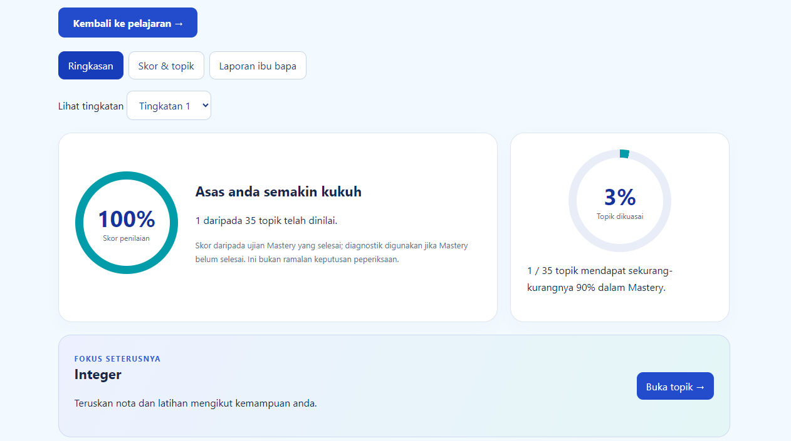
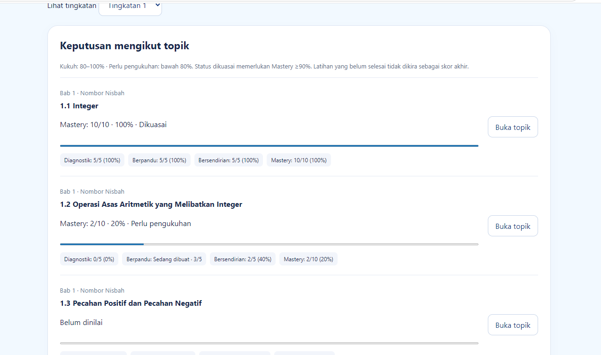
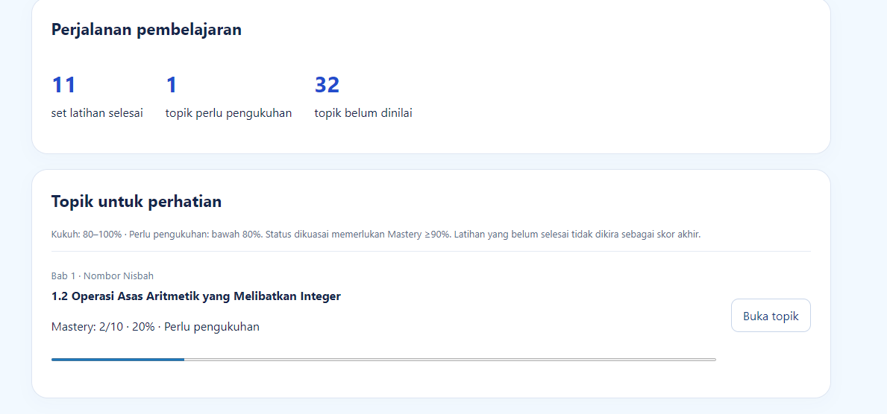

Mudah digunakan.
Seronok mencuba app dan mudah menggunakannya.
MATEMATIK KSSM · TINGKATAN 1, 2 & 3
Bantu anak faham cara menjawab,
satu langkah demi satu langkah.
Nota interaktif, latihan bertahap dan laporan pembelajaran Matematik KSSM Tingkatan 1–3 dalam satu akaun.
LIHAT PAKEJ & HARGASekali bayar • Tiada yuran bulanan • 3 Tingkatan
Tawaran RM39 terhad sehingga 30 September 2026, 11:59 malam (waktu Malaysia).

Anak mungkin boleh ikut contoh, tetapi tersekat apabila soalan berubah. Mulakan dengan satu topik: fahami konsep, cuba satu langkah dan semak bahagian yang belum tepat.
Latihan Berpandu memecahkan pengiraan kepada langkah kecil. Anak boleh semak langkah dan buka bantuan apabila perlu.
Laporan menunjukkan topik yang memerlukan pengukuhan, supaya ulang kaji ada arah.
Anak boleh kembali ke nota dan latihan apabila masih belum faham.

Buka laporan dalam akaun anak untuk melihat topik dikuasai, topik lemah dan cadangan ulang kaji. Laporan boleh dicetak atau disimpan sebagai PDF.

Profil dan kemajuan disimpan dalam akaun. Log masuk semula untuk menyambung pembelajaran.
Cuba set latihan UPSA dan UASA dalam aplikasi selepas ulang kaji topik. Ini latihan persediaan, bukan kertas peperiksaan rasmi.
Untuk anak yang:
Aplikasi ulang kaji kendiri. Mulakan dengan satu topik, baca nota dan cuba latihan mengikut rentak anak.
DARIPADA MEREKA YANG SUDAH MENCUBA
Maklum balas ini diterima untuk versi terdahulu Math Mastery. Ia bukan penilaian khusus terhadap versi akaun dan laporan baharu.

Seronok mencuba app dan mudah menggunakannya.
Mudah rujuk semula bab lama ketika ulang kaji.
Penerangan latihan asas senang difahami ketika mencuba.
Perlu faham latihan dengan betul untuk mencapai skor yang diperlukan.
Diringkaskan daripada maklum balas pengguna awal kepada pengasas; bukan petikan kata demi kata. Pengalaman pengguna boleh berbeza.
TURUT DISERTAKAN DENGAN PEMBELIAN
Bahan rujukan tambahan untuk ulang kaji anak.
 BONUS 01
BONUS 01Rujukan kuasa dan punca kuasa untuk disemak ketika membuat latihan.
 BONUS 02
BONUS 02Tips belajar dan teknik persediaan peperiksaan.
 BONUS 03
BONUS 03Rumus penting untuk dirujuk semasa ulang kaji.
Ketiga-tiganya disertakan tanpa bayaran tambahan.
Lihat pakej lengkap & tawaran ↓Akses Tingkatan 1–3 + tiga bonus.
Sekali bayar, tiada yuran bulanan.
Tamat pada 11:59 malam, waktu Malaysia.
Tarikh tamat tawaran harga sahaja. Akses yang dibeli tidak tamat pada tarikh ini.
TAWARAN BERAKHIR DALAM
Tawaran ini telah tamat.
MATH MASTERY · AKSES PENUH
RM39
SEKALI BAYAR SAHAJA
Bayaran melalui ToyyibPay.
Log masuk menggunakan e-mel yang sama seperti semasa pembayaran.
FPX atau DuitNow QR melalui ToyyibPay.
Terima pautan aplikasi dan panduan masuk melalui e-mel resit.
Gunakan Google atau pautan e-mel. Lengkapkan nama murid dan tingkatan.
Tawaran RM39 sah sehingga 30 September 2026, jam 11:59 malam waktu Malaysia. Tarikh ini mengehadkan tawaran harga, bukan tempoh akses bagi pembelian yang telah dibuat.
Math Mastery menyediakan Matematik KSSM Tingkatan 1, 2 dan 3 dalam satu akses. Anak boleh ulang kaji topik semasa atau kembali mengukuhkan asas Tingkatan sebelumnya.
Tidak. RM39 ialah bayaran sekali untuk akses kandungan Tingkatan 1–3. Tiada yuran langganan bulanan.
Selepas pembayaran berjaya, buka app.skormastery.com. Tekan Log masuk dan gunakan e-mel yang sama semasa pembayaran. Pilih Teruskan dengan Google atau Masuk tanpa kata laluan. Untuk pilihan kedua, buka Gmail atau aplikasi e-mel anda dan tekan pautan Sign in daripada Math Mastery menggunakan peranti serta pelayar yang sama. Tiada kod akses diperlukan.
Ya, buka aplikasi melalui pelayar dan log masuk dengan akaun yang sama. Kemajuan disimpan dalam akaun supaya boleh dimuatkan semula apabila anda masuk. Pastikan sambungan internet tersedia dan kemajuan selesai disimpan sebelum menutup aplikasi.
Ya. Gunakan sambungan internet untuk log masuk, mengesahkan akses pembelian, membuka kandungan dan menyimpan kemajuan ke akaun.
Log masuk ke akaun pembelajaran anak dan buka Laporan ibu bapa. Anda boleh melihat keputusan mengikut topik, cadangan bimbingan serta mencetak atau menyimpan laporan sebagai PDF. Laporan tidak dihantar secara automatik melalui e-mel.
Math Mastery ialah aplikasi ulang kaji kendiri dengan nota dan latihan berpandu. Tiada kelas langsung bersama guru. Aplikasi membantu menyusun pembelajaran; hasilnya bergantung pada kefahaman, latihan dan penggunaan anak.
Ada pertanyaan tentang akses? Tanya melalui WhatsApp.
Mulakan dengan satu topik yang anak belum faham.
Ada nota untuk dirujuk dan latihan untuk dicuba.
Sekali bayar · Tingkatan 1–3 · Log masuk dengan e-mel pembayaran